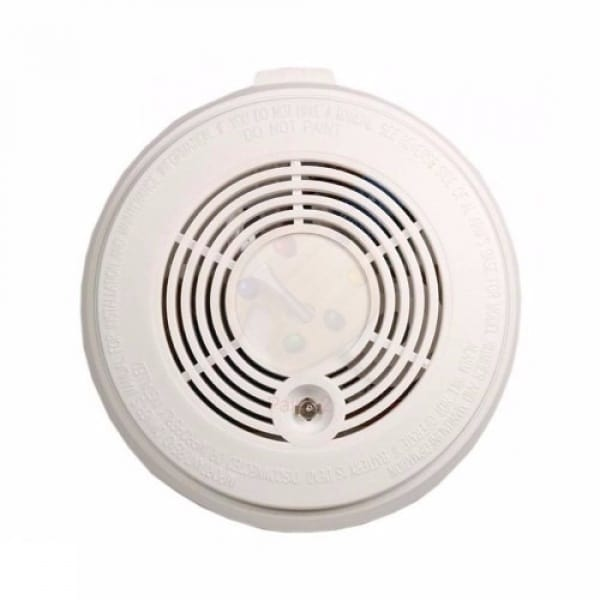

Smoke
SENSOR

About
A smoke detector is a device that senses smoke, typically as an indicator of fire. Commercial security devices issue a signal to a fire alarm control panel as part of a fire alarm system, while household smoke detectors, also known as smoke alarms, generally issue a local audible or visual alarm from the detector itself. Smoke detectors are housed in plastic enclosures, typically shaped like a disk about 150 millimetres (6 in) in diameter and 25 millimetres (1 in) thick, but shape and size vary. Smoke can be detected either optically (photoelectric) or by physical process (ionization); detectors may use either, or both, methods. Sensitive alarms can be used to detect, and thus deter, smoking in areas where it is banned. Smoke detectors in large commercial, industrial, and residential buildings are usually powered by a central fire alarm system, which is powered by the building power with a battery backup. Domestic smoke detectors range from individual battery-powered units, to several interlinked mains-powered units with battery backup; with these interlinked units, if any unit detects smoke, all trigger even if household power has gone out.
(End of About section) Back to Top
Specifications
- Name=smk
- Range=20%-90%
- Type=Digital
- Manufacturer =seeed studio
- Cost=416
- Life_span =1-2 years
- Voltage =3-5.5V DC
(End of specifications section) Back to Top